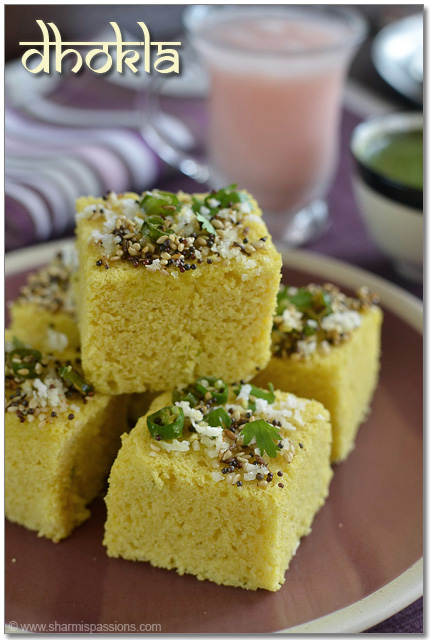
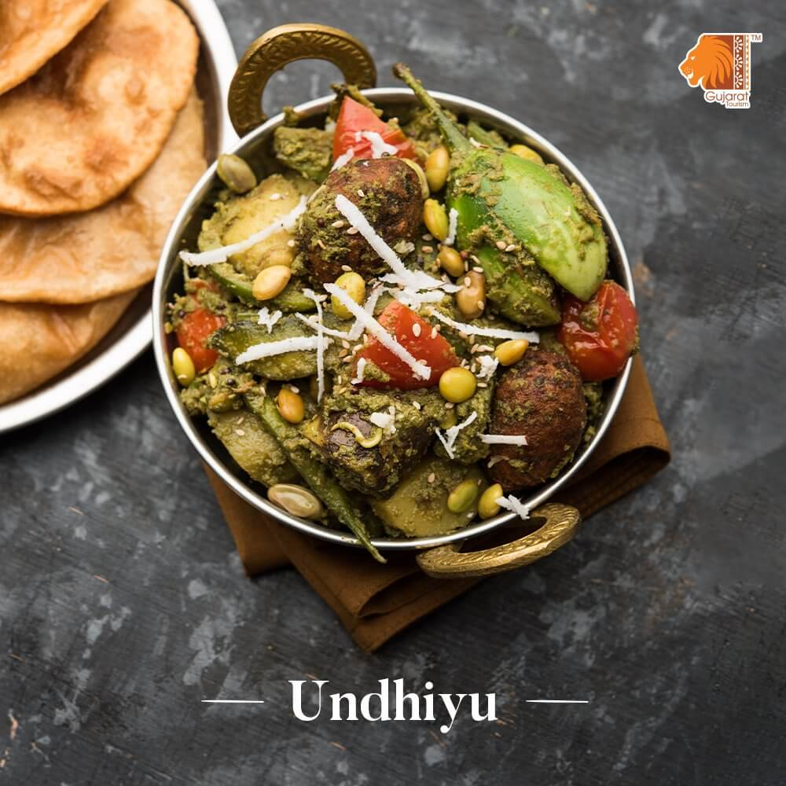
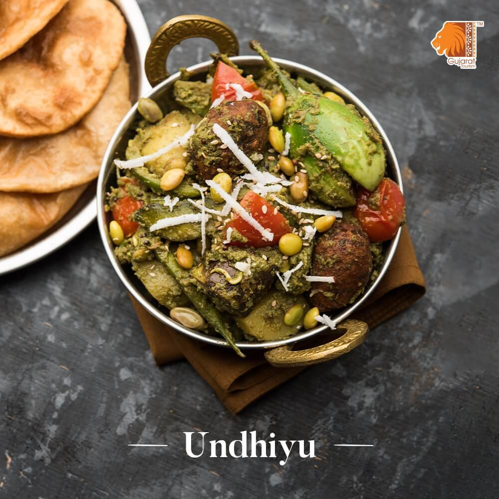

HELLO GUJRAT!
HERE ARE SOME FAMOUS FOOD FROM GUJRAT

 

Veg food which we can found in gujrat is
- KHAKRA
- DABELI
- MUTHIYA
Some non veg food
- MUTTON NU SHAAK
- PATRA NI MACHHI
- GHARAB NU ACHAAR
- KHAKRA
- Khakhra is a thin cracker common in the Gujarati cuisine of western India, It is made from mat bean, wheat flour and oil. It is served usually during breakfast.
- PATRA NI MACHHI
- Patra Ni Machi is a very popular Parsi dish in which fish smeared with generous amount of green chutney and then wrapped in banana leaf and steam cooked.
Serve with steamed rice and Vegetable Dhansak.
A normal meal plate contains
| Sr No |
Dish Name |
| 1 |
Rice |
| 2 |
Kadhi |
| 3 |
Kathiyawadi |
| 4 |
Kathor |
| 5 |
Mithai |
| 6 |
Chaash |